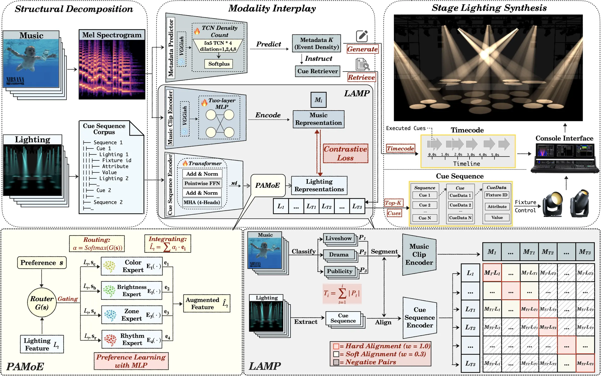
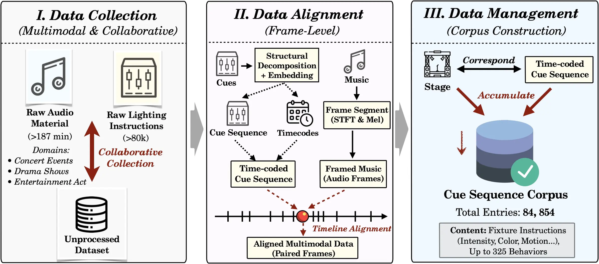
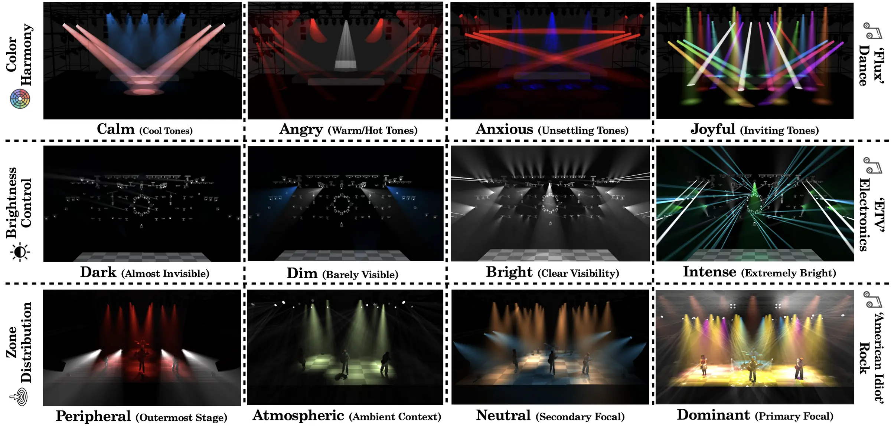
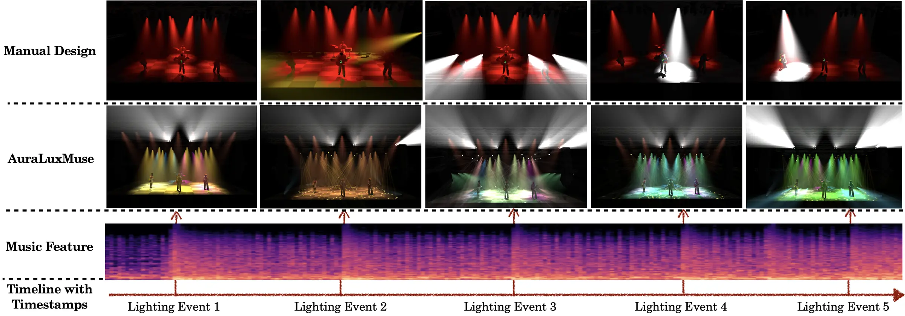
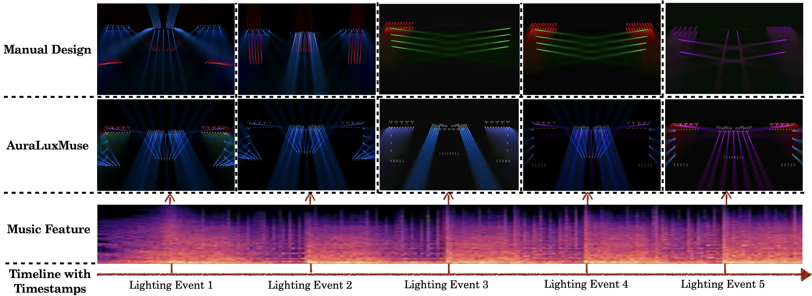
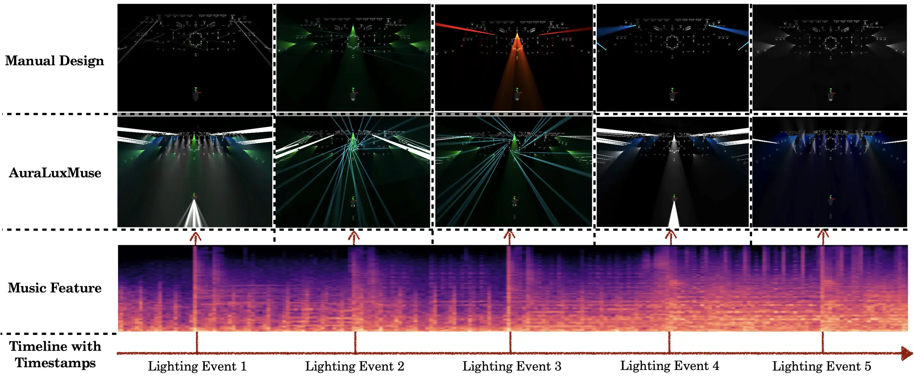
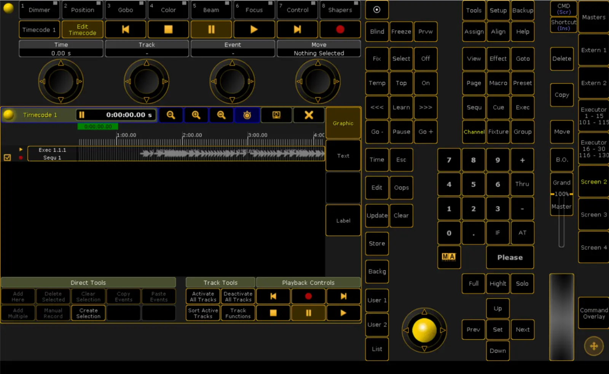
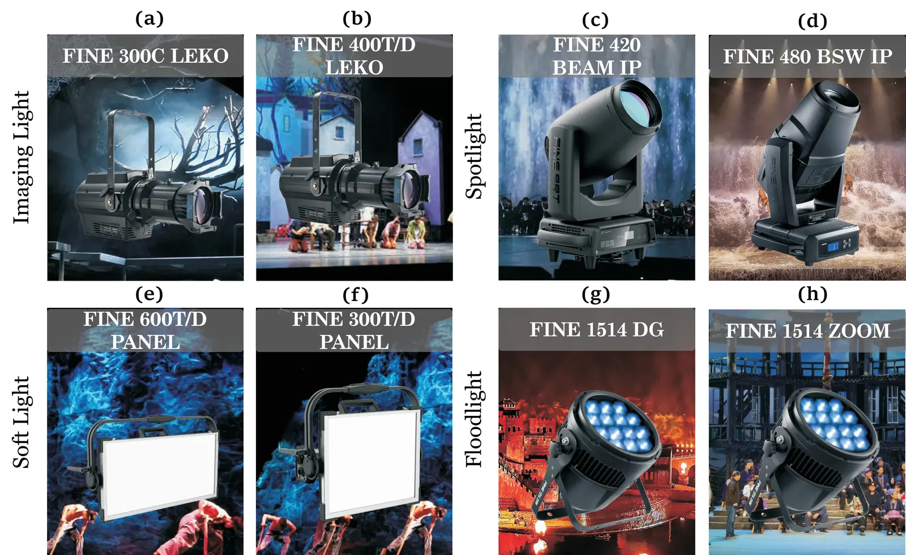

In the conventional pipeline, designers manually decompose the input music into artistic components, followed by iterative design, precise time alignment and parameter input into the lighting console. In contrast, AuraLuxMuse automates this process by leveraging deep audio feature extraction and contrastive representation learning. The system guides the generation of lighting parameters, which are seamlessly delivered to the console for real-time aesthetic lighting production.
Abstract
In this work, we present AuraLuxMuse, a novel system for automated aesthetic stage lighting generation that integrates expert knowledge, multimodal representation learning and preference-adaptive modeling. Lighting design in live performance settings requires the seamless translation of musical structure, rhythm and thematic intent into dynamic lighting behaviors. However, traditional workflows remain time-consuming, labor-intensive and difficult to transfer or scale. Mimicking the traditional stage lighting workflow, AuraLuxMuse replaces expert-driven analysis with deep learning-based feature extraction and decomposes lighting attributes into structured representations, which are jointly learned alongside music features under the supervision of curated metadata. At the heart of AuraLuxMuse are two key modules: LAMP (Lighting-Aligned Music Pretraining), which performs contrastive learning between audio and lighting cues to enable alignment, and PAMoE (Preference-Adaptive Mixture of Experts), which conditions lighting generation on designer intent through a gated ensemble of style-specific expert networks. To support training and evaluation, we introduce Musilux, the first dataset of paired musical audio and professional lighting cue sequences under diverse live performance scenarios. Experimental results, including objective metrics and subjective evaluation, demonstrate that AuraLuxMuse produces stage lighting that is visually cohesive, semantically aligned and artistically expressive, advancing the frontier of AI-assisted aesthetic stage design.
Framework Overview

Music and lighting data are individually preprocessed before entering LAMP for contrastive learning. Preference representations are injected via the PAMoE to enhance cue sequence encoding. The learned music and cue representations jointly inform the cue retriever, which selects Top-K lighting cues from the cue sequence corpus. Retrieval is guided by Metadata from the Metadata Predictor. The Lighting Encoder adopts a transformer-based architecture with four self-attention heads and the Music Encoder is composed of a VGGish network with multilayer perceptrons, all selected based on ablation studies. The Metadata Predictor integrates Temporal Convolutional Network density-count module and Softplus activation to enforce non-negativity.
Dataset: Musilux Construction Procedure

Initially, music and lighting cues are collected, and the distribution across scenarios is shown in the collection procedure. Alignment is performed at both the internal level of cues and the cross-modal level to synchronize music and lighting data. The resulting aligned sequences are then aggregated into Cue Sequence Corpus, constituting our Musilux Dataset. The dataset is composed of three scenarios:
Concert Events: Liveshow performances where lighting dynamically adapts to the musical structure, emphasizing synchronization.
Drama Shows: Theatrical productions employing lighting to enhance narrative and emotional engagement
Entertainment Art: Broadcasts, promotional events, and multimedia presentations with lighting building a specific atmosphere.
Performance of AuraLuxMuse across Lighting Styles

Demonstration of Stages among Lighting Styles. Visualization of lighting configurations across varying levels of color harmony, brightness control and zone distribution. Definition of terminologies in stage lighting are provided in the brackets.
Qualitative Results
Below are examples of outputs generated by AuraLuxMuse, compared with those manually designed by human designers:

Concert Event

Drama Show

Entertainment Art
Real-World Applications
The implementation is conducted using the stage lighting console provided by MA Lighting. For parameter adjustments, cue imports, and output operations, we utilize the grandMA2 system for lighting interaction and the MA3D platform for virtual visualization.

Interface of grandMA2 Software. The software suite offers real-time visualization, cue management, and timeline editing for complex lighting shows.

Professional Stage Lighting Fixtures. Stage lighting fixtures can be classified according to the morphology of their emitted light into four distinct classes: imaging light, spotlight, soft light, and floodlight.
Deploying AuraLuxMuse-generated lighting sequences on a real-world stage using the grandMA2 console involves preparing XML files, importing them into the console via a USB drive, and configuring execution logic through the console's macro commands. The sequence and timecode are assigned to specific executors for synchronized playback. Once configured, the user starts the show by triggering the timecode playback.
BibTeX
@inproceedings{deng2026auraluxmuse,
title = {AuraLuxMuse: Adaptive Fusion Modeling for Aesthetic Stage Lighting Design with Music and Expert Guidance},
author = {Deng, Junyu and Cao, Jiale and Li, Mengtian and Ji, Zhongxia and Chen, Ruhua and He, Yiyi and Ye, Guangnan and Hu, Zuo},
booktitle = {SIGGRAPH Asia 2026 Conference Papers (SA Conference Papers '26)},
year = {2026},
address = {Kuala Lumpur, Malaysia},
publisher = {ACM},
doi = {10.1145/3829340.3842259}
}